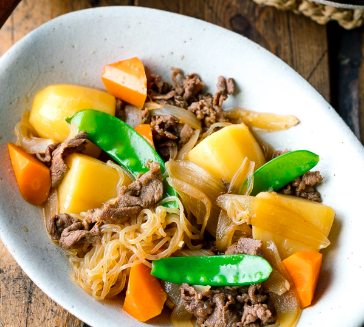

Nikujaga

Warm up thy winters with this japanese beef-and-potato stew
Maybe you ate too much Chicken Masala and now your tongues all scratchy.
Ease up and rest your palate with this savory soup from the land of Anime!
Ingredients
- Potatoes
- Thinly sliced beef or pork (thinly sliced meat cooks a lot faster!)
- Onion
- Shirataki noodles (Ito Konnyaku)
- ...
- Seasonings – soy sauce, sugar, mirin, sake, optional dashi
Steps
- Blanch green vegetable of your choice in a separate small pot. Set aside for the last step.
- Cook shirataki noodles according to package directions.
- ...
- When ready to serve, add in blanched green vegetable and reheat to serve.